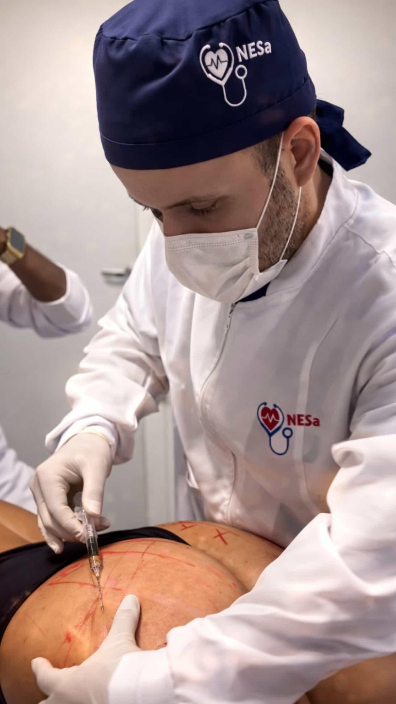
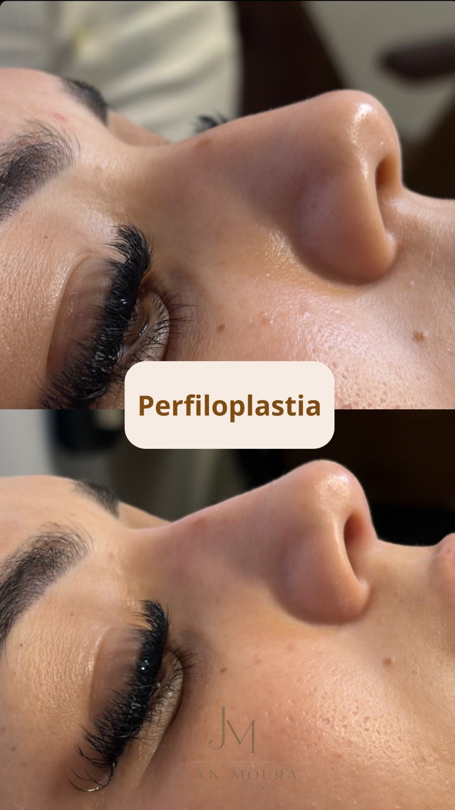

Harmonização facial
Planejamento facial individualizado com foco em equilíbrio, proporção e naturalidade.
Uma abordagem individualizada da estética avançada, unindo conhecimento científico, técnica e planejamento para valorizar a beleza de cada paciente.

“Estética não é sobre transformar rostos. É sobre compreender individualidades.”
Avaliação, anatomia, fisiologia e planejamento orientam decisões pensadas para respeitar características individuais e buscar resultados naturais.

Minha atuação é voltada à estética avançada, com atenção à qualidade da pele, harmonização facial, cosmetologia e tricologia.
Busco integrar raciocínio clínico, atualização científica e individualização de protocolos para que cada conduta tenha propósito, coerência e naturalidade.
Ver formação profissional →Planejamento facial individualizado com foco em equilíbrio, proporção e naturalidade.
Estratégias voltadas à textura, viço, colágeno e cuidado global da pele.
Seleção de ativos e protocolos a partir das necessidades específicas de cada pele.
Avaliação do couro cabeludo e fios com base em fisiologia, tecnologia e evidências.



Casos clínicos apresentados para fins de portfólio profissional. Resultados variam conforme características individuais e plano de tratamento.



Entender histórico, características e objetivos.
Definir uma estratégia individualizada e coerente.
Aplicar técnicas e recursos adequados ao planejamento.
Reavaliar evolução e ajustar condutas quando necessário.
Conteúdos sobre pele, envelhecimento, cosmetologia, estética avançada e tricologia.
Conteúdo educativo, leitura crítica de evidências e tradução da ciência para a prática estética.
Ver conteúdosPara informações sobre avaliações, tratamentos e disponibilidade.